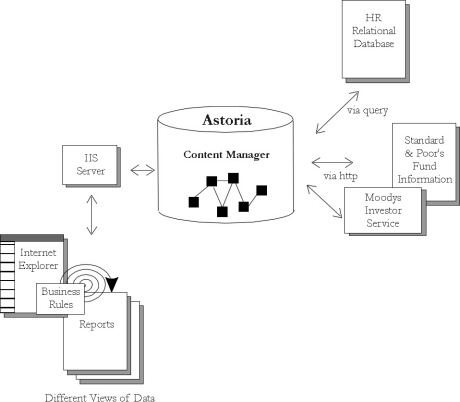

|
| ||
|
| ||
June 26, 1998
The Business Problem
The Role of XML
Solving the Problem with Chrystal Astoria and XML
Situation Overview
User Scenario
Behind the Curtain
XML Example
Information Flow Diagram
Investors need access to personalized information regarding their portfolios. Currently, financial institutions hand-craft such reports only for large companies or very important individual investors. Now the demand has increased for such reports from a broader range of individuals participating in group investment plans. To meet these demands, institutions must develop an automated service that combines data from various sources such as Moody's Investors Service, Standard and Poor's, EDGARS, financial analysts, and personal profiles. In addition, customers are demanding the ability to perform "what if" scenarios with the data and demand more charts, spreadsheets, and graphs to better understand the data. They are also looking for more up-to-the minute information about their investments.
We are in the midst of a fundamental shift in the way that people store information -- away from the traditional use of documents and files to thinking about a document as a container into which various pieces of data are combined or "poured" as required. This kind of document may be stored for an extended period of time or it may exist only as long as a person interacts with it.
In this scenario, XML defines the vehicle for describing and delivering data that enables retrieval, reuse, exchange, and combination in new ways. Specifically, the system uses information encoded in XML for querying and analyzing financial information. The results are dependent on the individual's profile.
With Astoria from Chrystal Software (http://www.chrystal.com  ), the financial institution is able to create on-demand reports containing up-to-date information, tailored for each individual investor. Since the report is generated automatically from existing data, multiple views can be developed with no incremental cost. These reports provide an instant view of the data, and provide financial advice based on various "what if" scenarios.
), the financial institution is able to create on-demand reports containing up-to-date information, tailored for each individual investor. Since the report is generated automatically from existing data, multiple views can be developed with no incremental cost. These reports provide an instant view of the data, and provide financial advice based on various "what if" scenarios.
Using Astoria, the financial institution's fixed information assets become liquid. With no programming ("out-of-the-box"), the financial institution loads both the XML data and the non-XML components into Astoria where it can be accessed, tracked, and versioned independently, providing a central repository for on-demand service. With Astoria's Software Development Kit (SDK), the financial institution streamlines and automates its data assembly and delivery processes.
Two employees in a Fortune 500 company investment plan wish to see their current portfolio and make some changes based on various scenarios and criteria. They are in the same plan but have very different financial needs.
The first employee selects the internal financial channel and identifies herself. With stocks soaring, she wants to get the latest analyst reports to see if she should buy or sell based on the funds that are available in her plan. When her portfolio is displayed, she's asked what action she wants to take. First she must decide if she wants to buy or sell immediately or set up instructions to track certain stocks and buy or sell when they reach a certain price. She is also interested in evaluating some long-term options.
To make these decisions, she poses various scenarios to the system. She has two children to send to college and wants to ensure she'll have enough income for her own retirement. So she asks the system to evaluate what kind of mix she needs based on the latest stock fund ratings and analyst reports from Moody's and Standard and Poor's. She asks the system to tell her (based on what's available in her plan) what portfolio will meet, exceed, or miss her expectations over 18 months, 5 years, and 20 years. The system returns the data on her current portfolio and makes some recommendations for long-term investment. A report is returned to her online, in a series of views showing the combined data along with the recommendations.
A second employee begins the same way but sees a completely different portfolio -- generated from the same financial data but based on his "stock picks" and his personal profile. He is an aggressive investor, young, with no children. He chooses to have the system remember his requests and send him a similar report updated on a weekly basis via e-mail.
For no additional charge, the financial institution has created multiple custom reports that meet customer demands.
The following XML example shows a financial portfolio combining local structured analyst data and remote relational investment data.
<portfolio name="Mary Weber" risk="balanced" return="medium">
<profile name="Weber, Mary Ann" employee="82340" source="HRdatabase"/>
<analystreports>
<Moodys source="http://www.moodys.com/profiles/webermary"/>
<description source="Astoria.Moody.Description.complete"/></Moodys>
<SP source="http://www.ratings.com/funds/profile/weberma">
<description source="Astoria.SP.Description.partial"/></SP>
</analystreports>
<investments>
<shortterm>
<moneymarket type="taxexempt" name="Phoenix"/>
<bond type="taxable" name="BioTech"/></shortterm>
<longterm>
<retirement>
<ira contribution="maximum"/>
<beforetaxsavings source="HRdatabase"/>
<collegefund name="NY Aggressive Fund"/>
</retirement>
</longterm>
</investments>
</portfolio>

Did you find this material useful? Gripes? Compliments? Suggestions for other articles? Write us!
© 1999 Microsoft Corporation. All rights reserved. Terms of use.